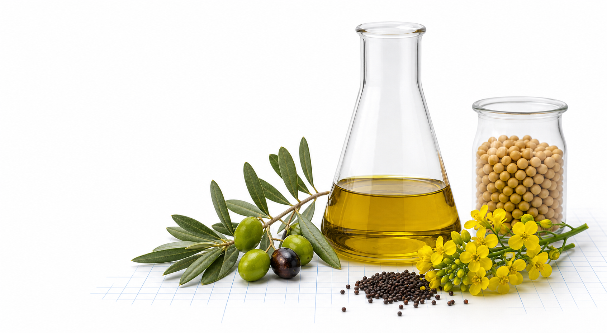

多元不飽和脂肪酸
Polyunsaturated fatty acids；含兩個以上雙鍵。大豆油、一般葵花油含量較高。
用脂肪酸組成拆穿橄欖油摻假

把總脂肪中的三類脂肪酸放在同一尺度比較，便能看見不同油品的「組成指紋」。
Polyunsaturated fatty acids；含兩個以上雙鍵。大豆油、一般葵花油含量較高。
Monounsaturated fatty acids；含一個雙鍵。橄欖油以油酸為主，因此 M 特別高。
Saturated fatty acids；不含碳碳雙鍵。椰子油的 S 明顯高於多數液態植物油。
先把三個含量同除以 P。例如橄欖油為 9.4：74.3：16.3，同除以 9.4 後得到 1：7.90：1.73。
不同原料的脂肪酸生合成特性不同，因此 P、M、S 分布不同。但天然批次仍有變異，正式鑑別不能只靠單一比值。
下列為每 100 g 油脂中的相對含量（g）。橫條以同一色碼呈現 P、M、S。
| 油品 | P | M | S | 組成視覺 | 判讀重點 |
|---|
選擇摻混油、改變橄欖油比例，立即比較混合物的 P／M／S 與純橄欖油標準。
「檢方查得的製程比例」與「由脂肪酸組成反推比例」是不同證據，不能混為一談。
算術正確：20 ÷ 600＝3.33%，代表橄欖油只占 3.33%。新聞中的 20：580 可來自調查紀錄、進貨或人員供述。
不能。把包裝上的 P／M／S 寫成 1：7.21：1.77，不會改變瓶中油的脂肪酸組成。真正的樣品分析仍會反映大量芥花油或大豆油。
共 8 題。作答後立即顯示正確答案與原因，完成後可重新挑戰。
若以本機伺服器或網站開啟，可掃描 QR Code 分享給學生；直接以檔案開啟時，請先部署或在同一 Wi-Fi 使用本機伺服器。